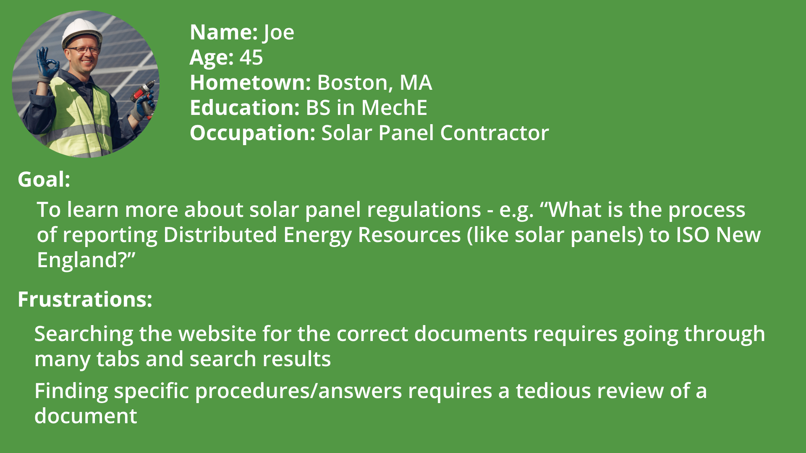

ThorGPT
Project Description
ThorGPT was my final group project for my CS-320: Software Engineering class. Our task was to build a RAG LLM for ISO New England, corporation that manages the electricity supply for New England. This LLM is to help users like ISO New England employees and contractors easily search for rules, procedures, and documents. I was responsible for building the frontend in React, designing the UI, updating documentation, and collaborating on the architecture for our project. However, this page will focus on the design process for developing the UI which I conducted independently.
User Persona
I started this design process by collaborating with ISO New England to develop a user persona. Through our dialogue, we came up with the persona of Joe, a solar panel contractor including his goal and frustrations. 
Design Considerations
Based on the user persona that we came up with, we identified two main design considerations to use when designing our prototypes.
- Transfer Effect
- Joe has probably used other LLMs such as ChatGPT or Microsoft Copilot which have similar UIs
- For example, they share a dark colored background and the main text input anchored to the bottom of the page
- Our design should be similar enough to other LLMs to fit users' intuitions
- Simplicity
- Joe's main frustration with the current search for answers is that it is complex and tedious to search for the right section in the right document
- Our design should aim to be as simple to use as possible to solve this problem
- We may do this by having only one frontend page
Prototype 1
Using the design considerations and user persona, I came up with
two low-fidelity UI prototypes for ThorGPT using Balsamiq. Below
is my first prototype.
 The home page has eight common engineered prompts available to
choose from. A user can also type their own prompt in the prompt
bar on the bottom and click on the send button to get an answer.
The prompt bar also has a button that links to the ISO New England
website, and a help button that helps users learn how to use ThorGPT.
The home page has eight common engineered prompts available to
choose from. A user can also type their own prompt in the prompt
bar on the bottom and click on the send button to get an answer.
The prompt bar also has a button that links to the ISO New England
website, and a help button that helps users learn how to use ThorGPT.
 This wireframe shows the UI when a user types in or chooses a prompt.
The user prompt is shown on the top right and the AI response is on the
left. The response also shows an embedded PDF that was used to answer
the prompt.
This wireframe shows the UI when a user types in or chooses a prompt.
The user prompt is shown on the top right and the AI response is on the
left. The response also shows an embedded PDF that was used to answer
the prompt.
Prototype 2
Below is my second prototype.
 The home page has three groups of common engineered prompts available to
choose from. A user can also type their own prompt in the prompt
bar on the bottom and click on the send button to get an answer.
The prompt bar has a link to the ISO New England
website, and link to a page which helps users learn how to use ThorGPT.
The home page has three groups of common engineered prompts available to
choose from. A user can also type their own prompt in the prompt
bar on the bottom and click on the send button to get an answer.
The prompt bar has a link to the ISO New England
website, and link to a page which helps users learn how to use ThorGPT.
 This page shows the UI when a user types in or chooses a prompt.
The user prompt is, once again, shown on the top right and the AI response is on the
left. The response here shows a few linked PDFs used to answer the prompt
with download icons if users want a closer look at the documents.
This page shows the UI when a user types in or chooses a prompt.
The user prompt is, once again, shown on the top right and the AI response is on the
left. The response here shows a few linked PDFs used to answer the prompt
with download icons if users want a closer look at the documents.
Prototype Analysis
I analyzed both of these prototypes to combine the best features
for a final prototype. From Prototype 1, I chose to use icons
for the ISO New England website and help pages in the prompt bar.
This results in less text crowding the page, simplifying the main
functionality.
From Prototype 2, I chose the linked PDFs instead of the embedded
PDFs. This option offers users the most flexibility in viewing the
PDFs as they can view the PDFs on their devices/browser, or
download and view locally. I also chose the three groups of
engineered prompts instead of the eight prompts because three groups
of common prompts is simple enough to be useful to users who have
common questions.
Final Prototype
After analyzing my two initial prototypes, I combined the best features
from each into one final prototype, also built in Balsamiq.
 The home page has three groups of common engineered prompts.
The prompt bar is the same as Prototype 1.
The home page has three groups of common engineered prompts.
The prompt bar is the same as Prototype 1.
 When user types in or chooses a prompt, the PDFs used to answer the prompt
are linked with download icons if users want a closer look at the documents.
When user types in or chooses a prompt, the PDFs used to answer the prompt
are linked with download icons if users want a closer look at the documents.
I took this final design back to ISO New England during our weekly
presentation, and they agreed with me that it sufficiently met our
design considerations and user needs!